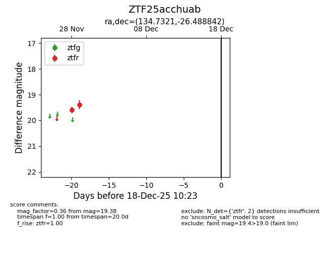
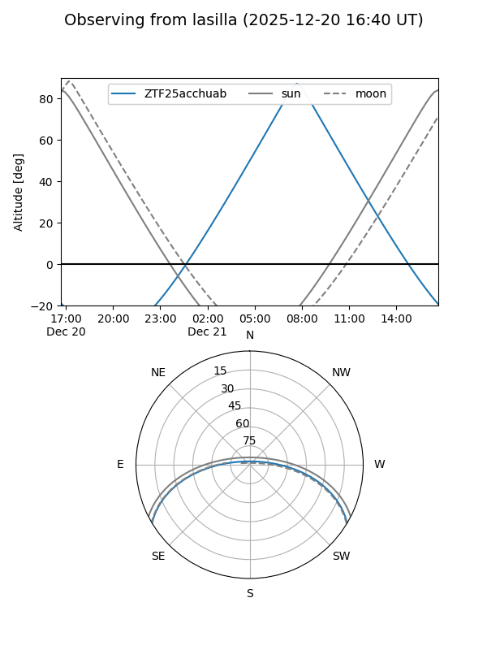
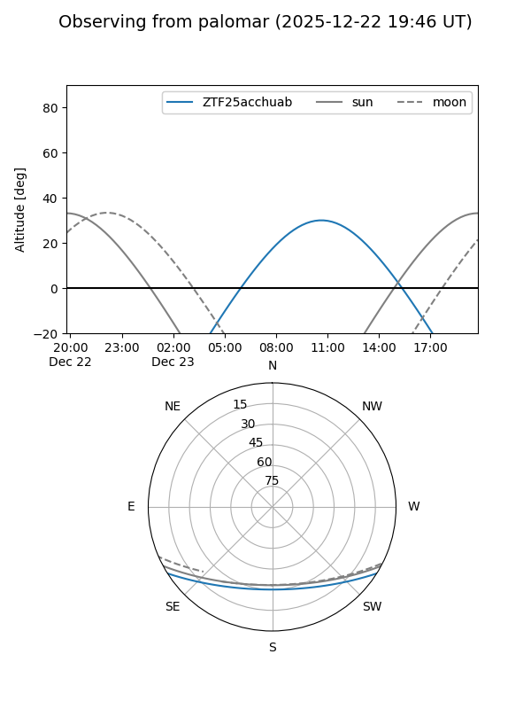

ZTF25acchuab
Target ZTF25acchuab at 2025-12-18 11:17
Aliases and brokers:
FINK: fink-portal.org/ZTF25acchuab
Lasair: lasair-ztf.lsst.ac.uk/objects/ZTF25acchuab
ALeRCE: alerce.online/object/ZTF25acchuab
alt names
ZTF25acchuab (ztf,fink_ztf)
Coordinates:
equatorial (ra, dec) = 134.7321,-26.48884
equatorial (HMS+DMS) = 08:58:55.71,-26:29:19.83
galactic (l, b) = (251.7932,+12.54637)
Photometry
last ztfr=19.38
2 ztfr detections
Lightcurve

Visibility


Additional plots